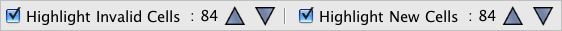

The WorkBench is both a stand-alone tool and an integrate part of the Specify platform. The Upload function is only available in the Specify WorkBench, not the stand alone WorkBench. Data sets created using the stand-alone version will need to be exported and reimported into the (embedded) Specify 6 WorkBench for uploading. The current version of the stand-alone WorkBench is not able to export data sets along with their mapping information; therefore, data imported into the embedded Specify WorkBench from the stand-alone WorkBench will need to be remapped.
Data sets in the Specify WorkBench can be uploaded into Specify 6 with the Uploader tool. This makes the uploader a fast and easy way to transfer data from an MS Excel or CSV file into Specify by first importing the data into the WorkBench.
When a data set is uploaded a record set in Specify will be created using the main table. The record set will be named using the name of the data set as well as the date of the upload.
Guest users are not allowed access to the Upload tool in the default Specify permissions.
Before uploading the data set, please note the following:
Accession
Agent
Borrow
Collecting Event
Collection Object
Conservation Description
Conservation Event
DNA Sequence
DNA Sequencing Run
Field Notebook
Field Notebook Page
Field Notebook Page Set
Gift
Loan
Locality
Permit
Preparation
Reference Work
Repository
Taxon
The validation tool compares the data in the data set to the required fields and field formats of the Specify fields to which they are mapped. It then indicates which cells violate requirements, don't match formats, or will create new data in taxon, geography and agent tables.
When a dataset is opened the validation panel is not automatically displayed. Simply click the
(validation) icon to show or hide the panel.

Validation Panel
Check the Highlight Invalid Cells to turn the validation off and on. This type of validation compares the values in each cell of the WorkBench with the values in Specify fields and highlights cells that contain invalid values in red. The number of invalid cells will be shown in the validation panel.
A tooltip is available within each cell that offers information about the invalid value. Simply hold the mouse over the invalid cell for the tooltip to appear. An example of an invalid value may be a date in an incorrect format or one that does not match the predetermined terms in a Specify Pick List. A more complete list of invalid values is offered in the Data Set Requirement section of this document.
Note: The validation tool can only check one level of hierarchical fields per validation. Column headings that are mapped to trees will be validated from the top of the tree structure. For example, in the Geography tree the validation tool will check the Continent field, then Country, then State, then County and finally City (your geography tree may have a different structure). If your data set contains new data in both country and state cells the validation tool will only alert you to the new data in the Country cells.
Note: The validate function will not clean up or detect bad (misspelled or incorrect) data. For example, it will upload any entry for 'genus' even if the data includes both genus and species information, is not a valid name or is misspelt. These should however be highlighted as new data in yellow (see below). The user is responsible for establishing that the data is clean and correct.
And / Or
Check the Hightlight New Records to turn the validation on and off. This type of validation compares the data in each cell of the WorkBench with the data in Specify fields and highlights cells that contain new data in orange. These cells should be checked for spelling and other errors as this may be the only reason these are being highlighted. The number of new data cells will be shown in the validation panel.
An blue highlight indicates that multiple matches have been found in the database e.g. if there is a Fred Smith and Jack Smith in the database and you have Smith mapped to an Agent last name field with no first name the validation tool will not know whether Smith should be matched to Fred or Jack, or be a new Agent.
Note: The WorkBench does not compare the cells within the WorkBench. Therefore, there may be times when multiple instances of the same new data occur in the dataset, but the validation tool will count and display each cell as containing new data. For instance; if the county Douglas is not included in the Geography tree within Specify but is included in 36 data set records, the validation tool will display the information: 36 New Cells, even though Douglas is only one new term.
Note: Validating new cells in large data sets can take some time. If it is necessary to cancel the Highlight New Cells function during a validation simply double click on the status bar.
The buttons
(up and down) allow you to move between the Invalid or New cells only. You can navigate through each invalid cell using the up and down arrows.
Catalog Number
- Collecting Event and Taxon (not the Taxon Only table) data must be associated with a Catalog Number.
- The Catalog Number format in the data set must match the field format (including the length) for Catalog Number in Specify.
- Catalog Numbers that include a numeric sequence that is incremented in Specify can be left blank in the data set and will be created automatically when Uploading into Specify. The new numbers will begin their numbering sequence based on the last number in the database.
- Catalog Numbers that are not formatted as an incremented number must contain data to upload.
Accession
- The format of the accession number in the data set must match the field format for Accession Number in Specify.
- The Latitude and Longitude must be in one of the accepted formats:
DD.DDDD (32.7619)
DD MMMM (32. 45.714)
DD MM SS.SS (32 45 42.84)
DD.DDDD N/S/E/W (32.7619 N)
DD MM.MM N/S/E/W (32 45.714 N)
DD MM SS.SS N/S/E/W (32 45 42.84 N)Formats can be changed using the Lat/Long Converter.
- Double quotes must be used for seconds (not single quotes).
Taxon, Geography, Lithostratigraphy, Chronostratigraphy and Storage
- All required ranks must be present. If the ranks below the lowest required rank are present in the data set and contain data, then the lowest required rank must also contain data. If no data is present for ranks below the lowest required rank, then it does not require data to upload.
- Tree levels (ranks) being uploaded must be present in the Tree Definition in Specify.
- When uploading only Taxon data (to add to the Taxon tree) use the mapping fields from the Taxon Only data types (in the data set mapping).
- When uploading Taxon data along with other data the Genus, Species, Subspecies and Variety fields need to come from the Determinations data type (in the data set mapping).
- If the highest rank in the data set does not match with a rank in the taxon tree new ranks will be created with the name of the data set being uploaded.
Collection Objects, Accessions, Loan
- Any formats used in the data set must match the format specified for the mapped field in Specify.
- Any preset values for Pick Lists in Specify must match the values (and format) in the data set or the data will not upload.
Dates
- Dates can be in any format in the data set and will appear in Specify in the system preference format.
- Partial Dates are only allowed for Collecting Event Start, Collecting Event End, Cataloged Date, Determination Date and Preparation Date in both the uploader and in the Specify database. Partial dates are uploaded in the US format (month, day, year) and allow zeros or dashes for unknown month or day. Any dashes or zeros for month or day are stored as '01' in the Specify database, which is used for search results.
00 --- 1968 (= 1968 in the form but 01 01 1968 in the database)
00-----1968 (= 1968 in the form but 01/01/1968 in the database)
00 00 1999 (= 1999 in the form but 01/01/1999 in the database)
11.00.1989 (= 11/1989 in the form but 11/01/1989 in the database)
00 11 1989 (this is invalid)
11 12 1989 (= 11/12/1989 on the form and in the database)
00/---/2000 (= 2000 in the form but 01/01/2000 in the database)
00 00 04 (= 2004 in the form but 01/01/2004 in the database)
00-00-04 (= 2004 in the form but 01/01/2004 in the database)
04 00 04 (= 04/2004 in the form but 04/01/2004 in the database)
04-00-04 (= 04/2004 in the form but 04/01/2004 in the database)
1989/00/00 (= 1989 in the form but 01/01/1989 in the database)
1999/01/00 (= 1999 in the form but 01/01/1999 in the database)
1999 00 00 (= 1999 in the form but 01/01/1999 in the database)
1999 02 00 (= 02/1999 in the form but 02/01/1989 in the database)
- Valid separators are '.' (period), '/' (forward slash), ' ' (space), and '-' (dash).
Preparations
If the data set does not include a Prep Type field one will not be created automatically.
Pick Lists
Columns in the WorkBench may be mapped to fields that are formatted as pick lists in Specify. In version 6.3 and older values from the data set can be uploaded into an existing pick list. The format of the pick list will determine the requirement for the data being uploaded.
- Read Only pick lists do not allow new values to be added throught the Uploader -- they must be added manually in the Pick List Editor. Values in the data set that do not match the values in the existing pick list can not be uploaded. Cells that do not match the predefined pick list values will highlight in red when validated. A tool tip will list the first 13 available pick list values for the field in Specify. To upload the record you must first add the pick list using the Pick List Editor or edit the cell to include one of the available value options.
- An Entire Table pick list allows new terms to be added to the existing pick list. New values can be uploaded from the data set. When validated the cells containing new values will highlight in yellow.
- A Field From Table pick list allows new terms to be added to the existing pick list. New values can be uploaded from the data set. When validated the cells containing new values will highlight in yellow.
- A non-Read Only pick list allows the user to enter new values into the pick list from within the form. New values can be uploaded from the data set. When validated the cells containing new values will NOT hightlight in yellow.
Cells that are mapped to fields formatted as pick lists in Specify are also available as pick lists. Simply double click inside the cell and it will change to a pick list. Then click (an arrow) to open the pick list and choose a value.
A tool tip will alert you to the first 13 pick list values for the field in Specify. Simply hold your mouse over the hightlighted cell to view the tooltip.
Also, double click on a cell to display a list of valid pick list values. You can then select one of the values from the list.
Remember Choices will treat the first
record with matches exactly as a 'Prompt' above, but will
remember the choice and automatically use it again when
identical values are found for succeeding records.
Match Empty Cells will search empty
fields as part of the search criteria and require a match when
set to True and disregard empty fields when set to False.
Note: If a tree rank is included in an upload that has not been included in the Tree Definition, Specify will use the name of the file to label the undefined node.
Note: When latitude and longitude values are entered into the WorkBench, the original value is captured into a hidden field to assist with format conversions. When data is uploaded into Specify, data from these fields is copied into the Specify (Source) field and will display on the Locality form.